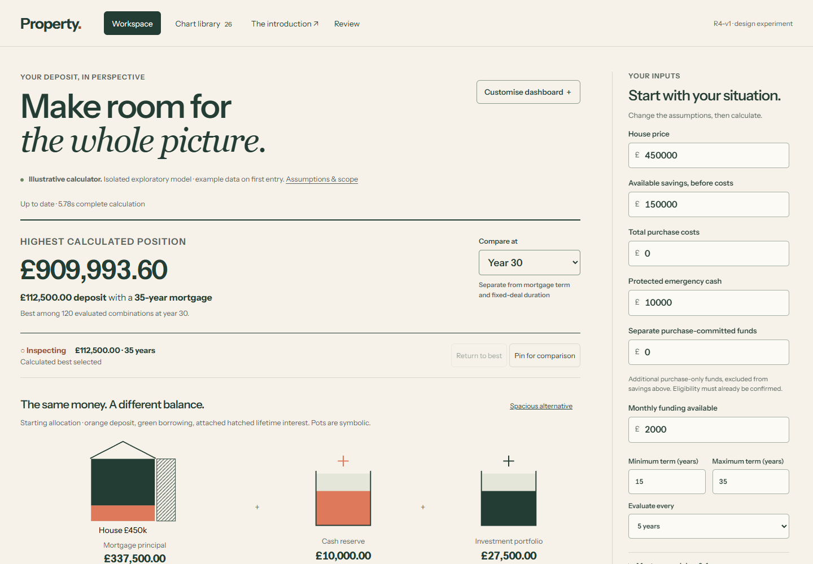
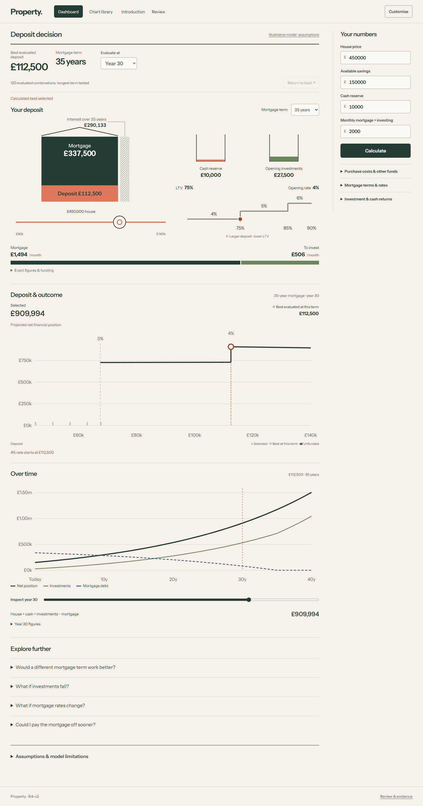
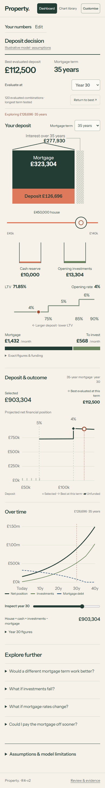

R4-v2: the deposit decision
Move the deposit. Follow the money, the rate and the projected outcome.
Watch ordinary use
Open, move across a rate threshold, select the curve, change term, return to best, edit inputs, calculate and open investment stress. Timestamped cues and application hashes · Playback verification.
What changed from R4-v1
| R4-v1 | R4-v2 |
|---|---|
| Large hero and wealth-led headline | Compact calculated deposit, mortgage term and evaluation year |
| Fixed-fill pots and repeated statistics | Values on familiar objects; stable proportional pot fills and shared monthly allocation |
| Default deposit–term map | Primary deposit curve, selected/best points and matching rate boundaries; term map opens on request |
| Tile controls, treatment switches and expanded forms | Customise, library and four focused disclosures |


One selected scenario
Deposit, mortgage, opening rate, interest, reserve, investments, monthly allocation, curve marker and timeline share the same evaluated plan. Term stays fixed during deposit movement. A separate best-evaluated result remains available. Changed assumptions are visibly stale until Calculate commits a new result.

Retained depth
All 26 chart questions, visual alternatives, term exploration, deterministic investment stress, rate changes, funded overpayments and timing remain available. Catalogue · R4-v1 research · Previous review.
Model and verification
Isolated Python Decimal exploratory model. Best among evaluated deposit–term combinations, not a global optimum. Net position includes remaining mortgage debt. Shared household funding and source ledgers are preserved. Fictional rates, entered costs and assumed returns; no tax/LISA qualification, inflation, investment fees or repeated refinancing. Deterministic stress paths have no probabilities. Full model and selection contract.
Local:24 model tests,10 introduction tests,12 JavaScript tests,11 complete worker/CPython parity cases;4,730 backend tests, Ruff and strict mypy53 pass. Two optional-PyYAML warnings. Four independent-review findings were fixed and regression checked. Desktop,320/390px emulated phones, keyboard, reduced motion, full-range touch, delayed responses and200% text were checked. All26 library views rendered. Default viewport scans report no axe violations or horizontal overflow.
Hosted checks and exact deployment identity are recorded separately in the publication receipt. Physical-device, Safari/Firefox, novice-comprehension and spoken screen-reader testing were not performed.
Exact application
6f49562278be3a84ca1ad57a1c3d453a74c5f02f. Recording hashes identify the compiled application. Later commits add review material, verification and publication receipts. Structured review record.
Ready for visual feedback. Neither main branch was merged; no R4-v3 work.